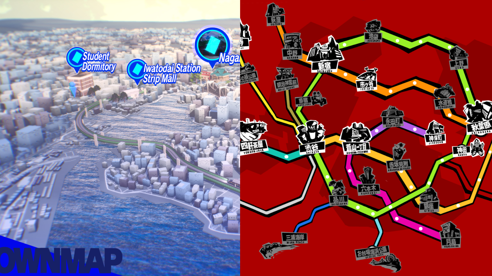

Game Density as a Lens to See Pacing
I am about 50+ hours into playing Persona 5: Royal recently, and having just played Persona 3: Reload, there is a remarkable difference in my experience playing the both.
P5 has been an extraordinary experience when compared to P3 in that I felt while playing that there were always "things happening" and progression constantly happening. There was a much stronger driving force pulling me through every day, and that it had still felt like I was in a tutorial still learning new things, when I had invested already over 30 hours into the game!
This is opposed to P3 where the middle months definitely began to feel like a slog, and more of a mindless grind to get to the next boss. And then those bosses usually ended up being pretty underwhelming as I didn't need to do anything to prepare for them. I'd just show up and kind of hit them with my fat stats. Maybe this is because I was playing on Normal, and had sufficiently grinded Tartarus, but rather than having a boss fight feel like an event I ought to prepare for, it felt more like another event that took up a day that I could have been getting scammed by Tanaka.

Don't get me wrong, I thoroughly enjoyed my playthrough of P3 and the ending had me feeling very emotional. But after starting P5 the experience of the actual day to day was completely different, and I think that's due to the density of choices available to the player at any time. Bear in mind, this is not a critique of P5, but rather an observation of how the distribution of content can completely alter a player's experience.
By giving players so many more choices, and having tasks that change depending on the day, it can completely shift the vibe of the playthrough. Persona 5 feels as if there is a sort of rush to do everything, as everyone is just kind of moving just to get to the next place. Rather than being in a port island town with a small strip malls, instead you're thrust into a bustling urban area complete with subways, large crowds, and shops filling the streets.
Without the huge density of available choices at all times, it would be very difficult to capture the feeling of downtown Tokyo. My guess is that this was in large part due to the hardware capabilities going from the PlayStation 2 with Persona 4 to the PlayStation 3/4 release for Persona 5.

You're constantly getting new locations deep into P5, even ones with a complete open world.
However, it's not just the number of choices a player has, but also the way they are spread out can have a significant effect on the experience of the player. In MMORPGs such as Final Fantasy 14 or World of Warcraft, they offer a grand open world experience, encouraging you to aimlessly wander through hills and fields as you explore every nook and cranny. While there are endless choices of what you can do, the experience is less intense because between every event there is a vast open world to cross and see.
Even if you only go from quest to quest without exploring in between, the games often force to physically travel great distances to far remote areas, especially if you have never been there before. Even in places you have visited, oftentimes you'll quicktravel to a location and then have to walk across to your final destination. While it may be a slog for some players, the part of the appeal of these games is to live in a new and open fantasy world. If the game allowed you to just quick travel right to every single quest location, then it would be very damaging to this fundamental appeal of an MMO game. Adding friction to travel by forcing the player to physically see the world locations at least once lets the player experience the environment as somebody in that world would have to do so before allowing them the conveniences of fast-travel. By doing so, they expose the player to the world, adding to the experience of not only a bustling city with other players, but a living breathing natural world.

Even when you unlock flying mounts, the world is so big it often still takes a decent amount of time to travel!
On the other hand, some game genres are built on very dense experiences such as roguelikes or even fighting games. These require you to make a many tiny decisions within a small amount of time with high consequences for each. These result in very intense, yet still palatable experiences that can give much satisfaction to the player when the decisions are made properly. It's strange to think of the pacing of a card game like Balatro, which has no story or even player character, but I think when framed around the density of decisions, we give ourselves a tool that's more grounded in the actual game's design. But I've already diverged quite far from where we've started so that will be a blog for another day.
By framing our understanding of creating games in the density of decisions, we can model something akin to pacing in all
sorts of games, but in a manner that is entirely unique to games themselves: Player Decisions.
jerry-gu.com/blog/)
Return Home